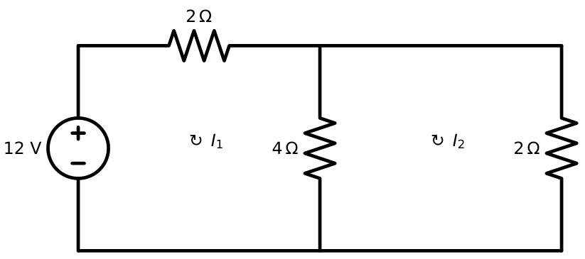
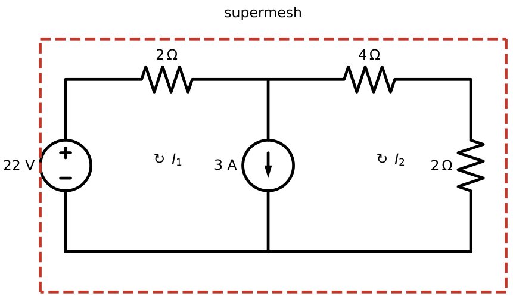
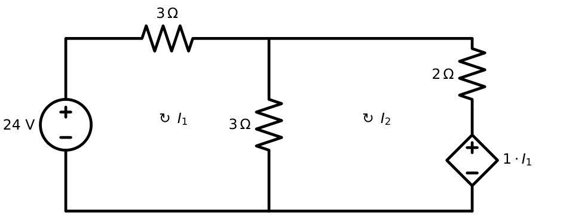

Mesh-Current Analysis
In this chapter
Two- and three-mesh circuits, supermesh with a current source shared by two meshes, and dependent voltage sources. Mesh analysis applies to planar circuits only.
3.1 Mesh and loop concepts
A loop is any closed path that passes through each node at most once. A mesh is a loop that contains no other loop inside it (one “window” of a planar circuit). A planar network with \(b\) branches and \(n\) nodes has \[m=b-n+1\] independent meshes. Each mesh is assigned a mesh current circulating (conventionally clockwise) around it. A branch shared by two meshes carries the difference of the two mesh currents.
3.2 The mesh-current method
- Assign clockwise mesh currents \(I_1,I_2,\ldots\) to each mesh.
- Write KVL around each mesh: \(\sum(\text{resistor drops})=\sum(\text{source rises})\). A shared resistor \(R\) between meshes \(k\) and \(j\) contributes \(R(I_k-I_j)\) to mesh \(k\).
- Solve the \(m\) simultaneous equations.
Mesh 1 contains a \(12\) V source, \(R_1=2\ \Omega\) and the shared resistor \(R_2=4\ \Omega\); mesh 2 contains \(R_2\) and \(R_3=2\ \Omega\) (Figure 3.1).
Mesh 1: \(2I_1+4(I_1-I_2)=12\Rightarrow6I_1-4I_2=12\). Mesh 2: \(4(I_2-I_1)+2I_2=0\Rightarrow-4I_1+6I_2=0\).
\(I_2=\tfrac23I_1\); \(6I_1-\tfrac83I_1=12\Rightarrow I_1=3.6\) A, \(I_2=2.4\) A. The shared resistor carries \(I_1-I_2=1.2\) A.

3.3 Matrix formulation
For resistors and independent voltage sources, write by inspection \[\mathbf R\mathbf I=\mathbf V\] with \[R_{kk}=\sum(\text{resistances in mesh }k),\qquad R_{kj}=-\sum(\text{resistances common to meshes }k\text{ and }j),\] \[V_k=\sum(\text{source rises in mesh }k).\] (With all mesh currents clockwise the off-diagonal terms are negative.) \(\mathbf R\) is symmetric for a reciprocal network.
\(\mathbf R=\begin{bmatrix}6&-2&0\\-2&7&-3\\0&-3&8\end{bmatrix}\Omega\), \(\mathbf V=\begin{bmatrix}10\\0\\-5\end{bmatrix}\) V. With \(\det\mathbf R=250\) (Cramer’s rule): \(I_1=1.76\) A, \(I_2=0.28\) A, \(I_3=-0.52\) A. Check row 2: \(-2(1.76)+7(0.28)-3(-0.52)=-3.52+1.96+1.56=0\). ✓
3.4 Supermesh
If a current source lies in a branch shared by two meshes, the voltage across it is unknown, so KVL cannot be written for either mesh alone. Instead:
- Form a supermesh: the loop obtained by omitting the shared branch, i.e. the outer periphery of the two meshes.
- Write one KVL around the supermesh.
- Write the constraint equation: \(I_1-I_2=\pm I_s\) from the current source.
Mesh 1: \(22\) V source, \(R_1=2\ \Omega\). Shared branch: a \(3\) A current source directed downward (i.e. along mesh 1’s clockwise direction). Mesh 2: \(R_2=4\ \Omega\) on top and \(R_3=2\ \Omega\) on the right (Figure 3.2).
Constraint: \(I_1-I_2=3\). Supermesh KVL: \(2I_1+4I_2+2I_2=22\).
\(2(I_2+3)+6I_2=22\Rightarrow I_2=2\) A, \(I_1=5\) A.
Voltage across the current source: mesh 1 gives \(22=2I_1+v_{cs}\Rightarrow v_{cs}=12\) V (drop in the direction of the \(3\) A).
Power check: source delivers \(22\times5=110\) W; resistors absorb \(2(25)+4(4)+2(4)=74\) W; the current source absorbs \(12\times3=36\) W. \(74+36=110\). ✓

3.5 Current sources in mesh analysis
- A current source in an outer branch (belonging to one mesh only) fixes that mesh current: \(I_k=\pm I_s\). One fewer unknown; no KVL is needed for that mesh.
- A current source in a shared branch needs a supermesh (above).
- A resistor in parallel with a current source is ignored when finding the other mesh currents.
3.6 Dependent sources in mesh analysis
Treat a dependent voltage source as an ordinary source in the KVL; then add an equation for its controlling variable in terms of the mesh currents. A dependent current source in a shared branch needs a supermesh together with the control equation.
Mesh 1: \(24\) V source, \(R_1=3\ \Omega\), shared \(R_2=3\ \Omega\). Mesh 2: \(R_2\), \(R_3=2\ \Omega\), and a CCVS of value \(1\cdot I_1\) (volts, per ampere of \(I_1\)) acting as a voltage drop in the direction of \(I_2\) (Figure 3.3).
Mesh 1: \(3I_1+3(I_1-I_2)=24\Rightarrow6I_1-3I_2=24\).
Mesh 2: \(3(I_2-I_1)+2I_2+I_1=0\Rightarrow-2I_1+5I_2=0\Rightarrow I_2=0.4I_1\).
\(6I_1-1.2I_1=24\Rightarrow I_1=5\) A, \(I_2=2\) A.

The CCVS in mesh 2 is controlled by \(I_1\), not \(I_2\). Its polarity relative to the mesh direction decides the sign in the KVL: reverse the polarity and the term \(+I_1\) becomes \(-I_1\), giving a different answer.
3.7 Comparison of nodal and mesh analysis
| Nodal | Mesh | |
|---|---|---|
| Unknowns | node voltages, \(n-1\) | mesh currents, \(b-n+1\) |
| Law used | KCL | KVL |
| Handles easily | current sources | voltage sources |
| Special case | floating V-source \(\to\) supernode | shared I-source \(\to\) supermesh |
| Applicable to | any circuit | planar circuits only |
3.8 Choosing the efficient method
Count equations before starting. Nodal needs \((n-1)-(\text{V-sources to ground})-(\text{floating V-sources})\) equations. Mesh needs \(m-(\text{outer I-sources})-(\text{shared I-sources})\) equations. Pick the smaller number. Circuits with many current sources \(\to\) nodal; many voltage sources \(\to\) mesh.
Q1. A planar network has \(9\) branches and \(6\) nodes. The number of independent mesh equations is (A) 3 (B) 4 (C) 5 (D) 6.
Q2. A supermesh is required when (A) a voltage source is shared by two meshes (B) a current source is shared by two meshes (C) a dependent source is present (D) a resistor is shared.
Q3. For a mesh-analysis resistance matrix of a reciprocal network with all mesh currents clockwise, the off-diagonal entries are (A) all positive (B) all negative or zero (C) all zero (D) alternating in sign.
Answers: Q1: \(9-6+1=4\) (B). Q2 (B). Q3 (B).
Q4. In the two-mesh example, \(R_3\) is changed to \(4\ \Omega\) (all else same). Then \(I_2\) is (A) \(1.2\) A (B) \(1.5\) A (C) \(2\) A (D) \(2.4\) A.
Q5. In the supermesh example the voltage source is changed to \(38\) V. The voltage across the \(3\) A source (drop along the \(3\) A direction) is (A) \(12\) V (B) \(20\) V (C) \(24\) V (D) \(10\) V.
Answers: Q4 (B): \(6I_1-4I_2=12\), \(-4I_1+8I_2=0\Rightarrow I_1=2I_2\), so \(8I_2=12\), \(I_2=1.5\) A. Q5 (C): \(2(I_2+3)+6I_2=38\Rightarrow I_2=4\), \(I_1=7\), \(v_{cs}=38-2(7)=24\) V.
Q6. In the three-mesh example, the power absorbed by the \(3\ \Omega\) resistor shared by meshes 2 and 3 is W (to two decimals).
Q7. In the CCVS example, the dependent source gain is changed to \(3\ \Omega\) (so the source is \(3I_1\)). \(I_2\) is A (to two decimals).
Answers: Q6: \(I_2-I_3=0.28-(-0.52)=0.80\) A, \(P=0.8^2\times3=1.92\) W. Q7: mesh 2: \(3(I_2-I_1)+2I_2+3I_1=0\Rightarrow5I_2=0\Rightarrow I_2=0\) A.
Q8. Select all correct statements. (A) Mesh analysis can be applied to non-planar circuits. (B) A current source in an outer branch fixes a mesh current. (C) A supermesh needs a constraint equation. (D) The number of meshes is \(b-n+1\) for a planar connected network.
Answers: Q8: (B), (C), (D). (A) is false: mesh analysis needs planarity.
(i) Writing KVL around a mesh containing a current source in a shared branch. (ii) Sign of the shared-resistor term: \(R(I_k-I_j)\), not \(R(I_k+I_j)\). (iii) Mixing clockwise and anticlockwise mesh currents without fixing the signs. (iv) Using the wrong controlling current for a CCVS. (v) Forgetting that a current source in an outer branch simply sets the mesh current.
T1. A planar circuit has \(12\) branches, \(8\) nodes, \(2\) current sources in outer branches and \(1\) shared current source. How many KVL equations must be solved? T2. For meshes with resistances \(R_{11}=5\), \(R_{22}=6\), \(R_{12}=R_{21}=-2\) and \(V=[8,\,-4]^T\), find \(I_1,I_2\).
Answers: T1: \(m=12-8+1=5\); minus \(2\) outer sources \(=3\); a shared current source combines two meshes into one supermesh and adds a constraint, so it also removes one net unknown: \(3-1=2\). T2: \(\det=30-4=26\); \(I_1=(48-8)/26=1.538\) A; \(I_2=(-20+16)/26=-0.154\) A.
- Meshes (planar): \(m=b-n+1\). Clockwise currents. KVL: \(\sum\) drops \(=\sum\) rises.
- Shared resistor: \(R(I_k-I_j)\). Matrix: \(R_{kk}=\sum R\) in mesh, \(R_{kj}=-R_{shared}\), \(V_k=\sum\) rises.
- Outer current source: \(I_k=\pm I_s\). Shared current source: supermesh (outer loop KVL) + \(I_1-I_2=\pm I_s\).
- Dependent sources: KVL as normal + control variable in mesh currents.
- Choose method by counting equations: nodal for I-sources, mesh for V-sources.